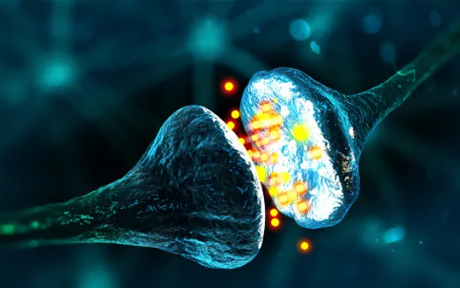

Neurônios e Sinapses
Neurotransmissores e Sinapses
O que são neurotransmissores? O que é e como ocorre as sinapses?
começar
Os neurotransmissores são definidos como mensageiros químicos que transportam,
estimulam e equilibram os sinais entre os neurônios, ou células nervosas e outras células do corpo.
Os neurotransmissores são sintetizados nos neurônios e armazenados em vesículas neuronais. A liberação de
neurotransmissores ocorre quando um impulso nervoso chega ao terminal do axônio, pois lá, essas moléculas são
liberadas por exocitose caindo na fenda sináptica (sinapse). Assim, os neurotransmissores se ligam a
receptores na membrana da célula alvo, iniciando uma resposta celular específica.
A quantidade e a eficácia dos neurotransmissores em uma sinapse são reguladas por vários fatores,
incluindo a taxa de produção, a velocidade de liberação e a degradação dos neurotransmissores, bem como a
presença e a afinidade dos receptores.
Desequilíbrios nos níveis de neurotransmissores estão associados a uma série de transtornos, incluindo
depressão, ansiedade, transtornos alimentares e transtornos do humor. Algumas drogas psiquiátricas atuam
alterando os níveis de neurotransmissores, ajudando a equilibrar a comunicação neuronal.
O conceito de sinapse é um pouco abstrato. De certo modo, esse pode ser considerado um espaço especializado no qual ocorrem as transmissões de impulsos nervosos entre os neurônios. Eles são os pontos de contato entre o terminal axônico de um neurônio e o dendrito ou corpo celular de outro neurônio.
No geral, esse processo de transmissão sináptica permite a comunicação rápida e precisa entre os neurônios, permitindo que o sistema nervoso processe e responda às informações do ambiente.